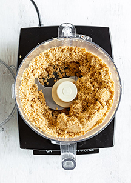
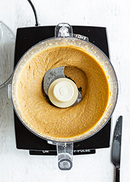
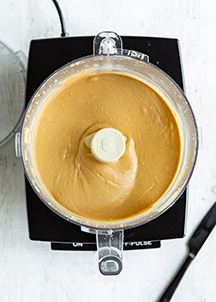

What Kind of Peanuts are Best for Homemade Peanut Butter?
Good quality, unsalted shelled peanuts work best. If they’re not already roasted, you can roast them in the oven.
Here’s how:
- Heat oven to 350 degrees. Add the nuts to a rimmed baking sheet.
- Roast nuts for 3 minutes, give the pan a shake then roast another 3 to 5 minutes or until the nuts are lightly browned and smell…nutty. Be careful that they don’t burn.
- Allow them to cool until you can handle them.
How to Make Homemade Peanut Butter?
Once you get the peanuts ready, add them to the bowl of your food processor. Turn it on and start watching.

The peanuts will go through several stages over the next few minutes of processing, so don’t worry, you’re doing it right. Just be sure to stop the machine every minute or so and scrape down the sides of the bowl.

You’ll see the peanuts go from crumbs to a dry ball to a smooth and creamy soft peanut butter. Depending on the processor, it may take a few minutes longer than others. It will happen!
